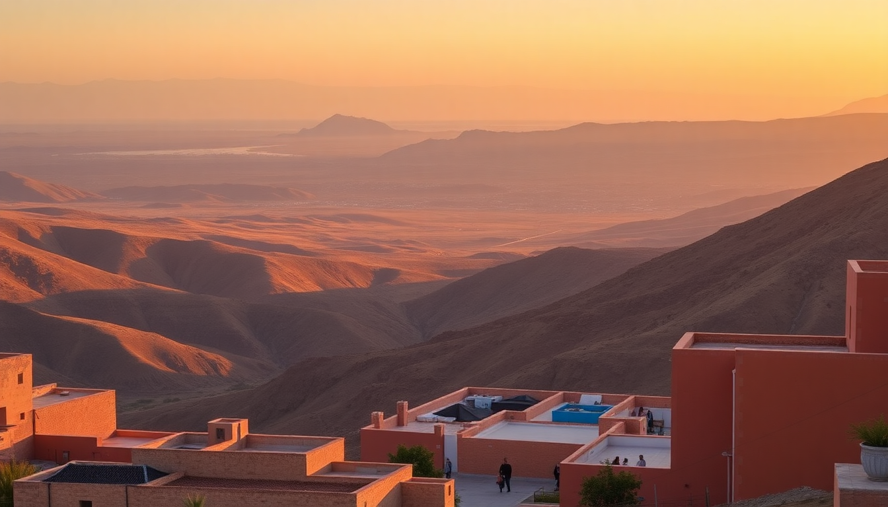

10-Day Morocco Itinerary: Marrakech, Fes, Sahara & Chefchaouen

We just got back from ten days in Morocco, and the route we took—Marrakech to Fes via the Sahara, then up to Chefchaouen—felt like the perfect balance of chaos, calm, and complete disorientation. You’ll cover a lot of ground, but the trick is knowing where to spend your time and where to just pass through. Here’s how we actually did it, with real places we’d book again and a few we’d skip.
Why follow this route instead of a loop?
Most first-timers try to do a full circle from Marrakech back to Marrakech, which wastes a day on redundant driving. We flew into Marrakech and out of Casablanca, which saved us about six hours of backtracking. The one-way flow—Marrakech, then the desert near Merzouga, then Fes, then Chefchaouen, then Casablanca for the flight home—felt natural. Each leg is long but doable if you break it with an overnight stop.
- Marrakech to Merzouga is a 9-hour drive, but we stopped at Aït Benhaddou (the UNESCO ksar) and Dades Gorge along the way.
- Merzouga to Fes takes about 7 hours via Midelt and the cedar forests near Azrou—good for a lunch break and seeing wild monkeys.
- Fes to Chefchaouen is a short 4-hour drive, and we added a detour to the Roman ruins at Volubilis (worth 45 minutes).
- Chefchaouen to Casablanca is 5 hours; you could also fly from Fes or Tangier if you’re short on time.
How many days should you spend in Marrakech?
Three nights felt right. We arrived late on day one, had two full days, and left early on day four. That gave us enough time to see the main sights without burning out on the medina chaos. The key is booking a riad inside the walls—we stayed at Riad Kniza in the northern medina, which was quiet and had a rooftop with a view of the Atlas Mountains.
- Jemaa el-Fnaa at night is an experience, but the food stalls are overpriced and aggressive. Eat at Café Clock on the rooftop instead.
- Bahia Palace is genuinely beautiful and not too crowded if you go right at 9 a.m.
- Majorelle Garden is pretty but felt overhyped and packed with influencers. Skip if you’re short on time.
- For dinner, Le Jardin in the medina has a peaceful courtyard and solid tagine.
What’s the best way to visit the Sahara from Marrakech?
We booked a private driver through our riad for the two-day trip to Merzouga. A group tour is cheaper but you lose control over stops. We left Marrakech at 8 a.m., spent an hour at Aït Benhaddou (it’s a movie set, not a living village, but worth a look), then drove through the Tizi n’Tichka pass. We overnighted at Kasbah Itran in the Dades Valley—basic but clean, with a great dinner included.
The next day we reached Merzouga by noon, swapped the car for a camel, and rode out to a desert camp. We used Dar Tafouyt for the camel trek and stayed at their camp in Erg Chebbi. The sunset over the dunes was real, not Instagram-filtered. The camp had proper beds and a toilet tent, which I appreciated more than I expected.
- Bring a scarf for the camel ride—sand gets everywhere.
- The camp dinner is usually a vegetable tagine; it’s fine, but pack snacks.
- Sunrise in the dunes is the best part. Walk away from camp for silence.
Is Fes worth the reputation for chaos?
Yes, but you need a guide for the medina. We hired Mourad through the hotel for a half-day walking tour, and it saved us from getting lost in the 9,000 alleys. Fes is raw—tanneries, donkey carts, and the smell of leather dye. It’s not pretty like Marrakech, but it’s more real. We stayed at Palais Amani, which was a calm escape with a pool.
- Chouara Tannery is the main sight. Go early (8 a.m.) to avoid crowds and the worst of the smell. They hand you mint leaves to hold under your nose.
- Al-Attarine Madrasa is tiny but stunning—tilework that puts Marrakech’s to shame.
- Lunch at Restaurant Ouliya for a bowl of bissara (fava bean soup) and bread.
- The Mellah (Jewish Quarter) is quieter and worth a walk for the architecture.
How do you get from Fes to Chefchaouen without losing a day?
We drove directly (4 hours) and spent the afternoon wandering the blue medina. Chefchaouen is small—you don’t need a guide. The blue-washed streets are photogenic but the town is a real place, not a theme park. We stayed at Lina Ryad & Spa, which had a rooftop with mountain views and a hammam.
- Place Outa el Hammam is the main square. Grab a mint tea at Café Clock (yes, another one) and watch the town wake up.
- The hike up to the Spanish Mosque takes 20 minutes and gives you the classic view of the whole blue town.
- Dinner at Restaurant Beldi Bab Ssour—the lamb tagine with prunes was the best we had in Morocco.
- Skip the “hashish” sellers in the medina. They’re scamming tourists.
What about getting between Chefchaouen and the airport?
We flew out of Casablanca, so we drove from Chefchaouen to Casablanca (5 hours) on our last day. If you’re flying from Fes or Tangier, adjust accordingly. The drive to Casablanca is mostly highway and boring, but we stopped in Meknes for a quick look at the Bab Mansour gate and the royal stables. Meknes is underrated—quieter than Fes, with similar architecture.
- If you have time, the Mausoleum of Moulay Ismail in Meknes is free and impressive.
- Casablanca itself is not worth a stop unless you’re catching a flight. The Hassan II Mosque is stunning from outside, but the city center is a concrete sprawl.
FAQ
Is it safe to drive in Morocco? Yes, but it’s stressful. Roads are well-maintained between major cities, but drivers are aggressive and speed limits are ignored. We hired a driver for the long legs and rented a car only for the Fes-to-Chefchaouen stretch. If you drive yourself, avoid night driving—animals and unlit vehicles are common.
What’s the best time of year for this itinerary? March to May and September to November. Summer (June-August) is brutally hot in Marrakech and the desert. Winter (December-February) is cold at night in the desert and Chefchaouen gets rain. We went in late October and had perfect days (75°F) and cool nights.
How much cash do you need? Morocco runs on cash. Most riads and small restaurants don’t take cards. Withdraw from an ATM at the airport in Marrakech—we used about 2,000 dirhams ($200) for four days of meals, tips, and small purchases. Larger hotels and tour companies accept cards.
Conclusion
- Fly into Marrakech and out of Casablanca (or Tangier) to avoid backtracking.
- Spend three nights in Marrakech, two in the desert, two in Fes, and two in Chefchaouen.
- Hire a guide for Fes medina, but wander Chefchaouen on your own.
- Book a private driver for the long desert leg—group tours rush the good stops.
- Pack layers, cash, and a scarf. Skip the group camel rides at sunrise—walk the dunes alone instead.